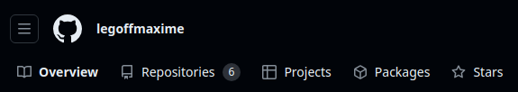
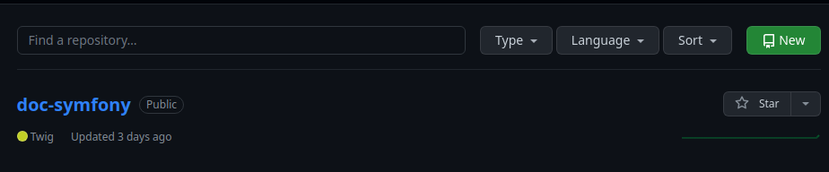
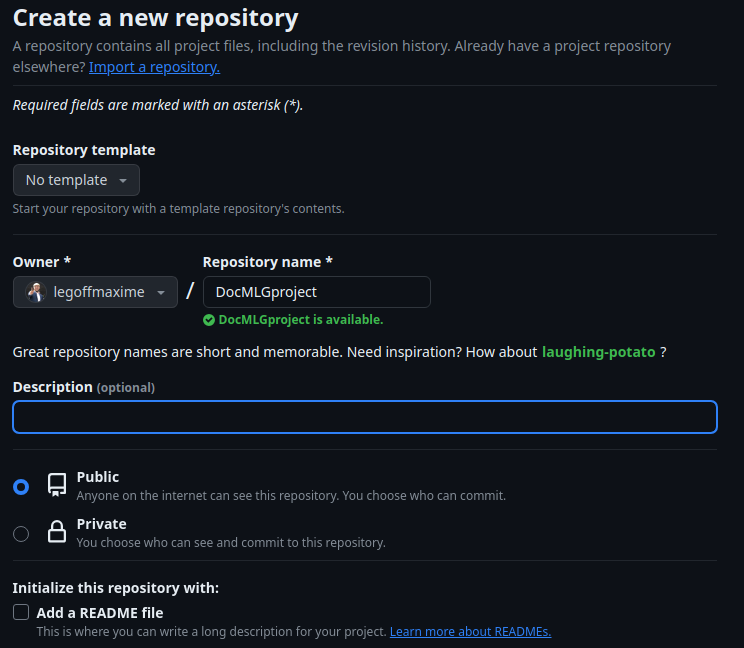
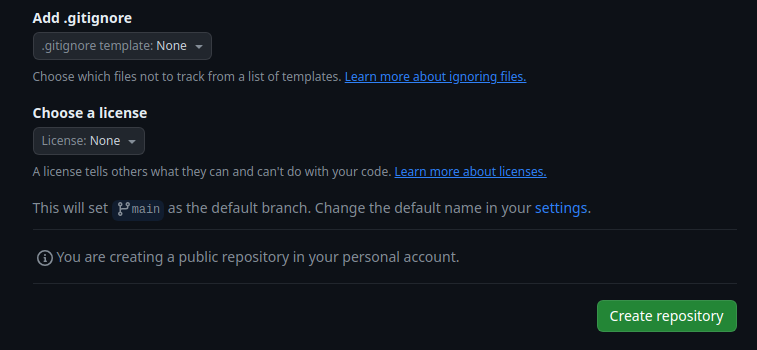
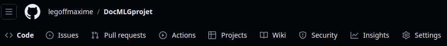
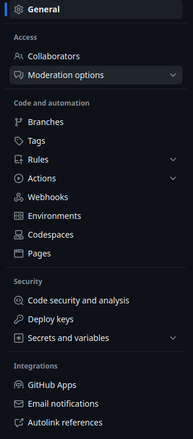
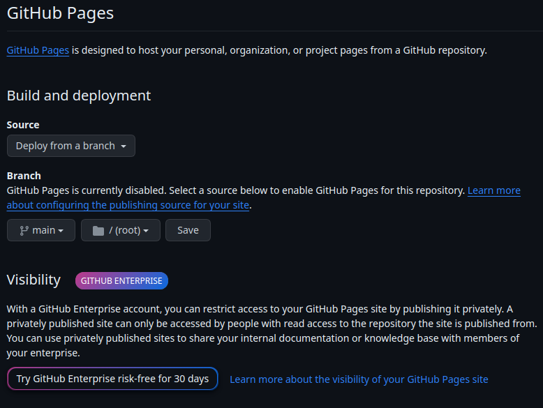
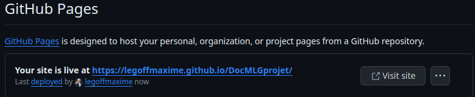

Salut! deja, pour commencer, tu vas creer un projet! Mais sur github, tu ne pourras pas
mettre de langage backend, donc tu vas devoir te contenter de HTML, CSS et JS. c'est deja pas mal! du temps de mon pere shiniji tojo, tu aurais
deja pris une mandale pour cette grimace.
IMPORTANT: creer un index.html a la racine de ton projet (ta page d'accueil) sinon github ne pourra pas afficher ton site!
Une fois que tu as ton site, ton css tout ce qu'il faut, rends toi sur github (mais jamais aux yakuzas!)
et crée un nouveau repository↓

Ensuite, tu vas cliquer sur new, ou nouveau si tu preferes!

A ce moment la, tu vas donner un nom à ton projet, et dans owner choisir
ton compte github, mets le en public si tu veux que tout le monde y ait acces, private si tu veux choisir,
personellement, le readme.md je le crée à la main, donc je le coche pas, mais si tu veux, tu peux le cocher,
chacun fais ce qu'il veut mais si tu me dis quoi faire, il faudra éviter mon rightCross à la Sugar ray leonard!

Ensuite ils vont te demander si tu veux créer un Add .gitignore, je mets toujours none, puis pour la license,
je préfère ecrire dans mon README.md les conditions d'utilisation, rien ne t'empeches de choisir la license qui te convient le mieux.
Clique sur create repository!

Tu vas maintenant pouvoir push ton projet sur github, tu es bien sur ton projet dans visual studio code? ouvre le terminal et suis les étapes demandés
sur github...bon, je vais t'aider, puisque tu insistes
git init (pour initialiser git)
git add . (pour ajouter tout ton projet)
git commit -m "Crée le premier commit du projet"
git branch -M main (pour créer une branche main)
git remote add origin *nom de ton projet* (pour ajouter ton projet)
git push -u origin main (pour push ton projet sur github)
On y est presque! clique sur settings↓

Ensuite, sur le menu de gauche sur ta page settings, clique sur "pages"!

Te voila sur la page de configuration de ton site, tu vas choisir ta branche main,
et le dossier /root, c'est a dire le dossier ou se trouve ton index.html

Maintenant tu patientes quelques minutes, Tokyo ne s'est pas fait en un jour!
et tu recharges ta pages, regardes jeune voyou, ton site est en ligne! le lien a ete generer↓

Tu peux maintenant partager ce lien avec toute ta bande!
REVENIR A LA PAGE D'ACCUEIL
こんにちは！まず最初に、プロジェクトを作成してください！しかし、GitHubではバックエンドの言語を入れることはできませんので、HTML、CSS、JSで我慢する必要があります。それでもかなりです！父、新司東城の時代では、その表情で既に平手打ちを食らっていたでしょう。
その後、新しいページを作成するために、「新規」またはお好みで「新しい」をクリックします。
その時点で、プロジェクトに名前を付け、所有者としてGitHubアカウントを選択します。アクセスを全員に許可する場合はpublicに、選択したい場合はprivateに設定します。個人的には、README.mdは手動で作成するので、チェックはつけませんが、もし望むならつけても構いません。各自が自分のやり方で進めますが、私に指示があれば、Sugar Ray Leonardの右クロスを回避する必要があります！
次に、.gitignoreファイルを作成するかどうか尋ねられますが、私はいつも「none」を選択します。次に、ライセンスについて尋ねられますが、私は利用条件をREADME.mdに記述することを好みます。もちろん、あなたに最適なライセンスを選択することもできます。最後に、「Create repository」をクリックしてください。
今、あなたはVisual Studio Codeでプロジェクトにアクセスしているはずです。ターミナルを開いて、GitHubの指示に従ってください。... よし、手伝ってあげます、あなたが頑張っているので。
git add . （プロジェクト全体を追加するため）
git commit -m "プロジェクトの最初のコミットを作成"（最初のコミットを作成するため）
git branch -M main（mainブランチを作成するため）
git remote add origin *プロジェクト名*（プロジェクトを追加するため）
git push -u origin main（プロジェクトをGitHubにプッシュするため）
もう少しで目標に到達します！「settings」をクリックしてください。
その後、設定ページの左側のメニューで「ページ」をクリックしてください。
これで、サイトの設定ページにいます。mainブランチと/rootディレクトリ（つまり、index.htmlがあるディレクトリ）を選択してください。
今、数分お待ちください。東京も一日ではできませんでした！そして、ページをリロードしてください。見ろ若造、君のサイトがオンラインになりました！リンクが生成されました。
これで、このリンクを仲間全員と共有できます！
ホームページに戻る